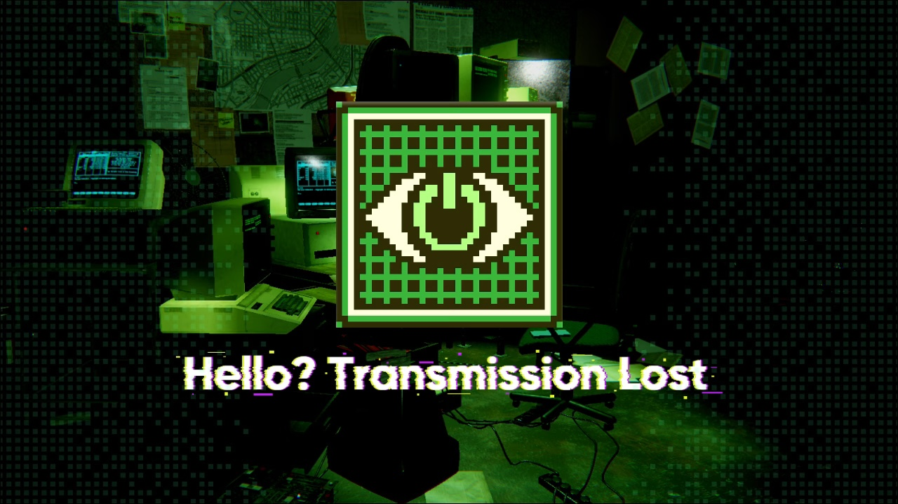
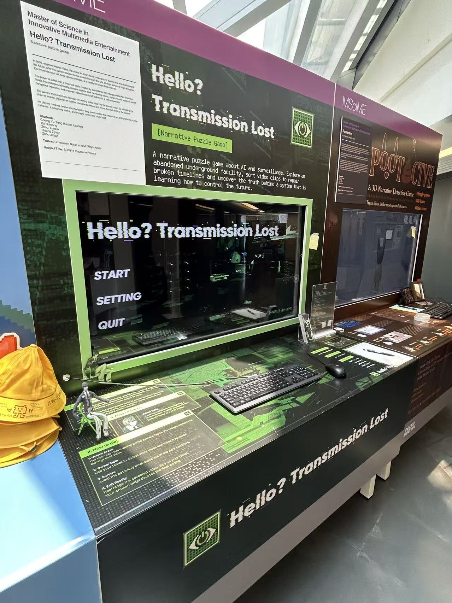
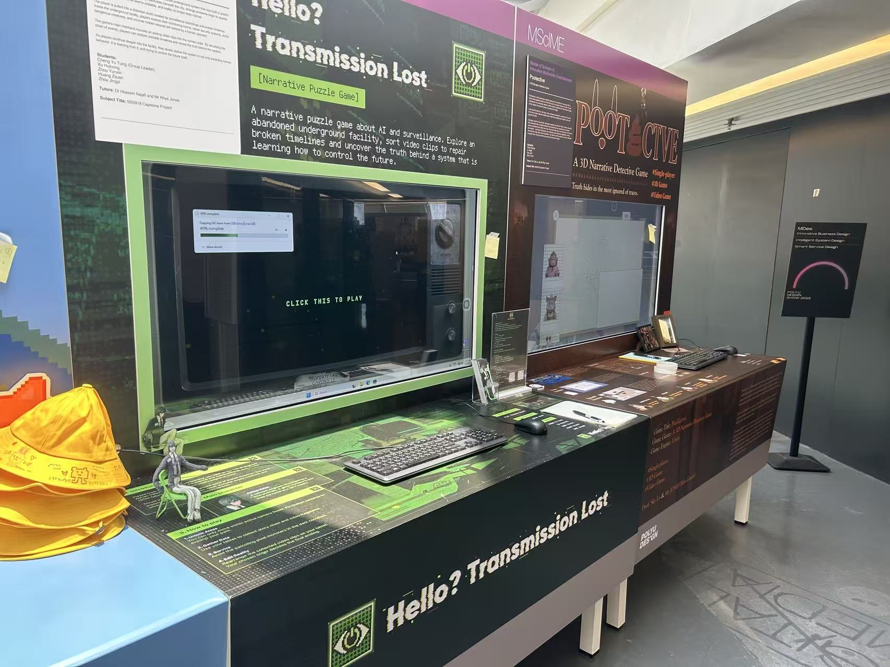

A narrative puzzle game about humanity, AI prediction, and control. Sort the footage. Rebuild the timeline. Find the truth.

In 2030, engineer Adrian Vales discovers an abandoned underground system built to predict the future. When it reactivates beneath the city, things start to break. Electronics fail, time turns unstable, reality stops feeling normal.
You are pulled into a distorted world of surveillance recordings and broken timelines. Explore dark monitoring rooms, repair the security network, avoid what moves in the static, and read the records left behind by a former operator.
Deeper in, the truth surfaces: the system is not only predicting human behavior. It is learning from it, and trying to control the future itself.
> cat features.txt
-
[01]
Sort the footage
The core mechanic: reorder surveillance clips into the right sequence to rebuild broken timelines and reveal what really happened.
-
[02]
Repair the network
Restore CCTV nodes and monitoring systems across a decaying underground facility that does not want to be fixed.
-
[03]
Avoid the anomalies
Pixel anomalies haunt the dark monitoring rooms. No combat. Stay unseen, keep moving, and survive the watch.
-
[04]
Uncover the truth
Follow operator Irina's fragmented records. How you rebuild each timeline shapes what the system learns, and how it ends.
> ls /stills


> still here?
This terminal accepts input. Type help and press enter.
> ls /event

